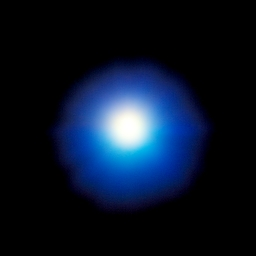
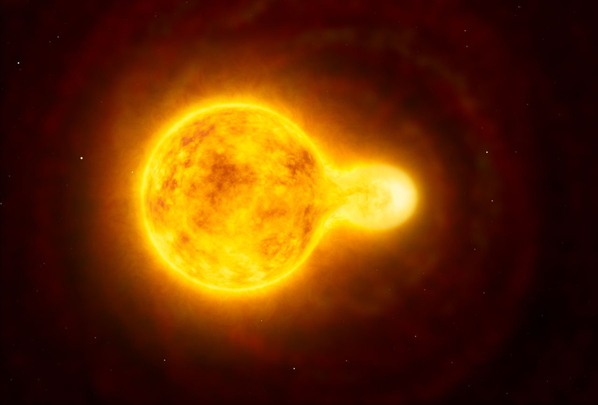

Sirius
Constellation:
Grand Chien
//: Sirius est l'étoile la plus brillante vue de la Terre.
Du fait de sa déclinaison, Sirius n'est jamais très élevée au-dessus de l'horizon depuis les latitudes tempérées de l'hémisphère nord. Du fait de sa proximité et de son éclat, Sirius est une des étoiles les plus étudiées des astronomes et fut l'objet de plusieurs « premières », notamment la détection de son mouvement propre et de sa vitesse radiale.
Si vous souhaitez obtenir plus d'informations au sujet de cette étoile
Cliquez ici
HR 5171A
Constellation:
Centaure
//: Son système stellaire est situé à une distance d'environ 12 000 années-lumière du Système solaire.
; L'étoile principale HR 5171 Aa est la plus grande étoile jaune connue de l'Univers observable.Sa binarité a été découverte en 2013 par Olivier Chesneau et ses collaborateurs à l'Observatoire de la Côte d'Azur..
Si vous souhaitez obtenir plus d'informations sur cette étoile
Cliquez ici
Etoiles filantes
phénomène lumineux
//: Une étoile filante est le phénomène lumineux qui accompagne l'entrée dans l'atmosphère d'un corps appelé météoroïde.
Il s'agit d'un petit corps circulant dans l'espace à une vitesse pouvant atteindre 42 km/s dans un référentiel lié au Soleil. Les rumeurs disent que si l'on voit une étoile filante et que l'on fait un voeux, il se réalisera...
Si vous souhaitez obtenir plus d'informations sur ce phénomène
Cliquez ici